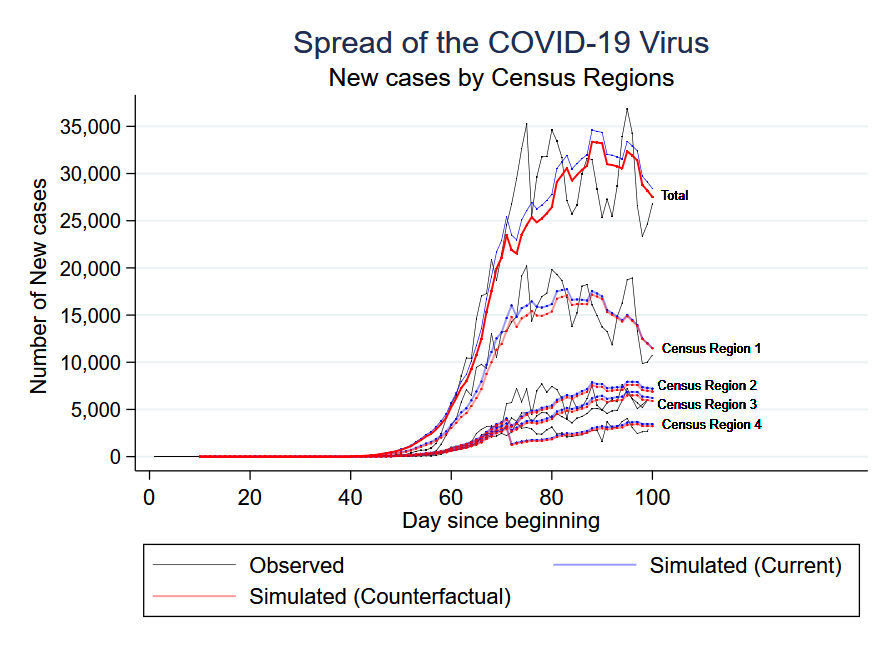

Most Recent Work
|
The Role of Labor Unions in Response to Pandemics: The case of COVID-19 [Paper]
Labor unions are among the largest institutions in the United States, and their role in regulating employee–employer relations is hard to ignore. Costly efforts to control the spread of COVID-19 (i.e., decreasing economic activity and increasing workplace safety measures), combined with the monopoly and collective voice faces of unions, emphasize the role unions can play in shaping the response of the workforce in coping with COVID-19. We analyze the effect of union size by utilizing state-level data in the United States and by employing a nonlinear probability model and general method of moments estimation. The results suggest new evidence of positive externalities for union employees compared with nonunion employees. We find that a 10% increase in unionization in the United States would lead to around 5% decrease in total cases of COVID-19 100 days after the onset of the virus, controlling for hours of work and differences in union members’ characteristics. |
 |
Working Papers
|
The Effect of changing the Medicare Eligibility Age on the Health of the Near-Retirement Population [Paper | Slide]
Raising the eligibility age for Medicare, the third largest program in the federal budget, could lead to a large reduction in the federal budget deficit; however, the effect of this change on the welfare and the health of the near-retirement population is unclear. Using Health and Retirement Study (HRS) dataset, I measure the effect of a change in Medicare eligibility age on the welfare of the elderly population by estimating a dynamic discrete choice model of health and retirement that endogenizes health investment decisions. The empirical model allows for tracking the health behavior, labor supply and health status among the other key variables. Using Forward Simulation and Conditional Choice Probability estimator (CCP), I incorporate a large, multidimensional state space consisting fixed unobserved heterogeneity that serves as a measure to better identification of the effects. I find that labor supply, life expectancy, and mental health will be affected positively in response to an increase in the Medicare eligibility age. The welfare effect, however, is negative and there is some evidence of cost transfers from Medicare to the Social Security Program.
Measuring Health in HRS dataset using Bayesian Approach [Paper]
This paper provides a measure of the physical health for the near retirement people based on the binary responses of individuals to the sets of questions, regarding the objective aspects of their health. Using three sets of questions: Activities of daily living (ADL), Lower Body Mobility (LBM) and Upper Body Agility (UBA), I employ the Item Response Theory and using Bayesian approach estimate the individual distribution of health for each individual in the Health and Retirement Survey (HRS) sample of 2008. The Analysis of 17,217 sets of individual responses shows that LBM and UBA affect the combined health index (Full Index) more strongly and ADL has a weak effect on the health index. While the correlation between the full measure of functional limitation and LBM and UBA is 0.92 and 0.84 respectively, the correlation between functional limitation and ADL is only 0.5.
|
Work in Progress
|
|